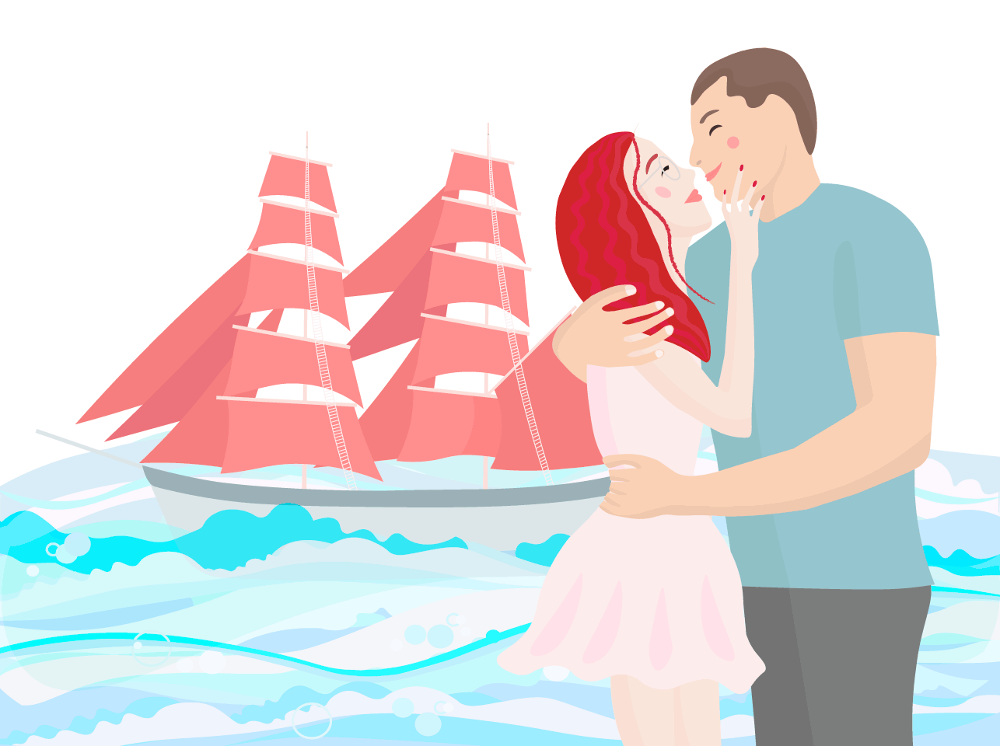
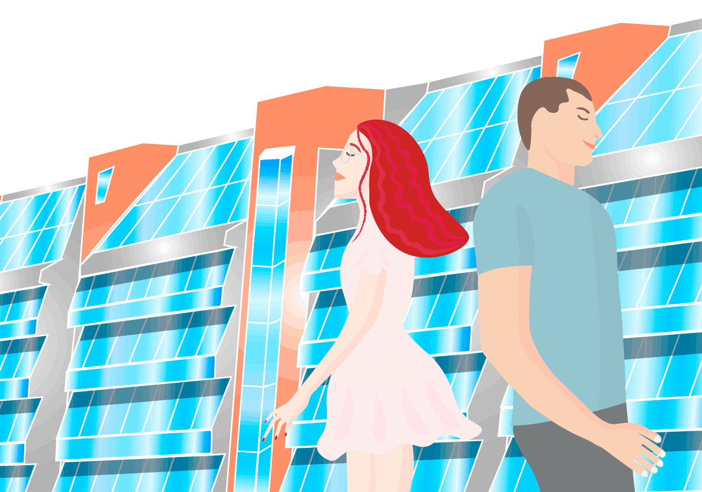
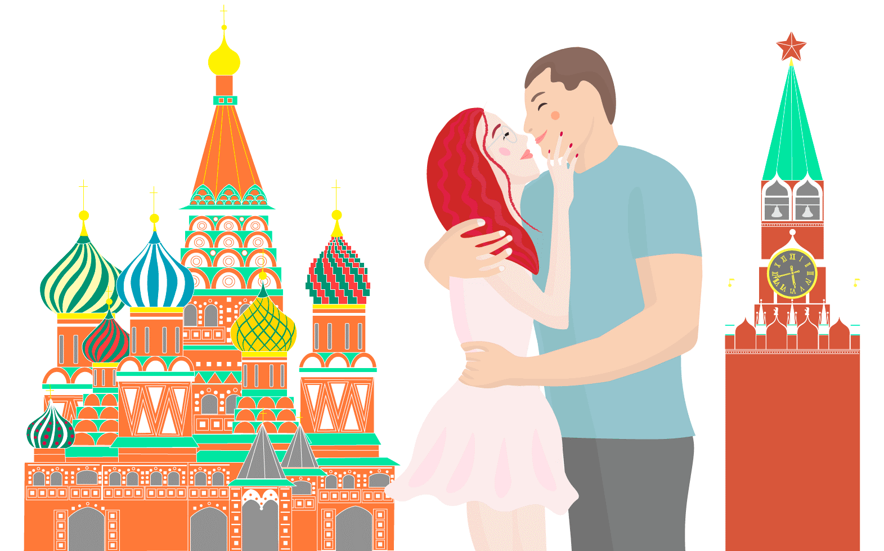

привет!
это должно было быть маленькой историей, но превратилось в далекое плавание.
в эту лодку я запрыгнула не глядя, доверившись практически незнакомому человеку.
учась в одной группе, больше полугода мы не замечали друг друга, но без него, совершенно неизвестно,
встретились ли бы когда-либо.
от домашки по математике разговор быстро перешел к предложению выпить, и что-то незаметно завертелось.

долгие прогулки, неловкие столкновения рук через каждые пять шагов, и вот вы уже держитесь за руки.
в эти дни я полюбила свою набережную. проводы заката под счет вагонов, теплые весенние дни, неловкие
объятия.
а потом - Москва. с тех пор я полюбила этот город всей душой.
это было довольно странно - жить вместе - но я до сих пор всей душой люблю ту неделю.
ни с кем еще не было так комфортно гулять долгими часами по городу.
вместе находить новые места, греться на солнце, не думая ни о чем.
и хоть началось то путешествие беззаботно и спонтанно, уезжая, я поняла, что все уже не будет, как было.
но как будет - я совсем не представляла. понимала лишь то, что оставила часть себя.

я была уверена, что меня хватит на месяц. казалось, что невозможно сосуществовать с человеком больше. но
все оказалось совсем иначе.
было много разных дней: как счастливых, так и тех, что не хочется вспоминать. но все же, я рада, что обрела
самого близкого теперь человека.
и надеюсь, что навсегда.